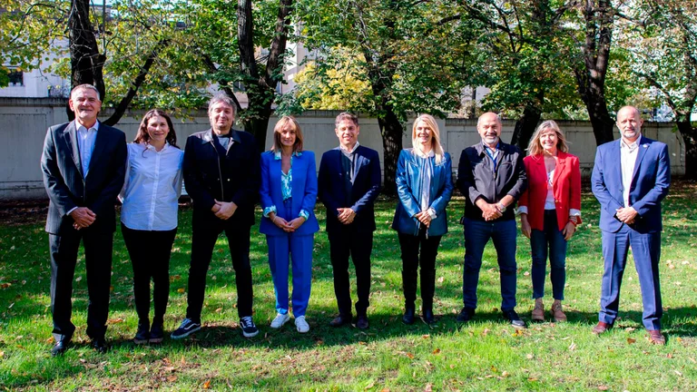

Tras la primera foto, el Frente de Todos profundiza la institucionalización en la provincia de Buenos Aires
Habrá reuniones en distintos puntos de la provincia y el objetivo es imitar lo que hizo en Chaco el gobernador Jorge Capitanich y abrir la discusión a partidos más chicos
